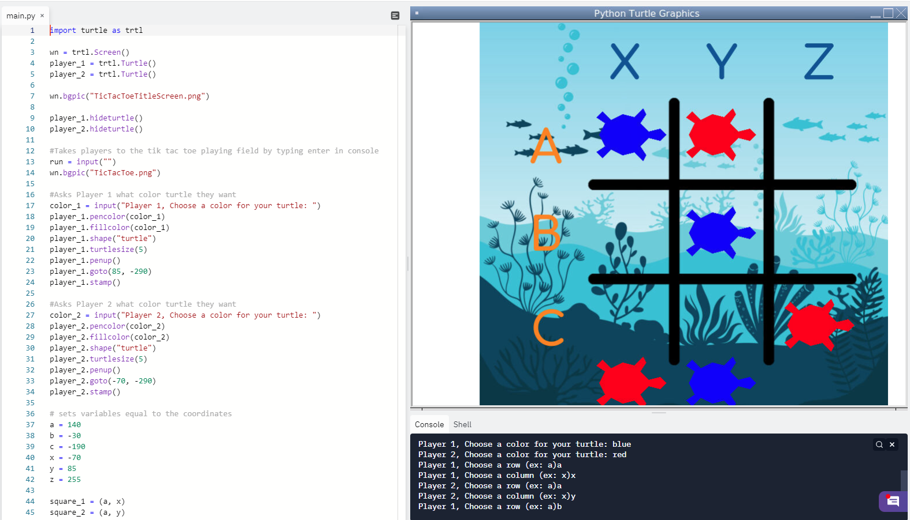
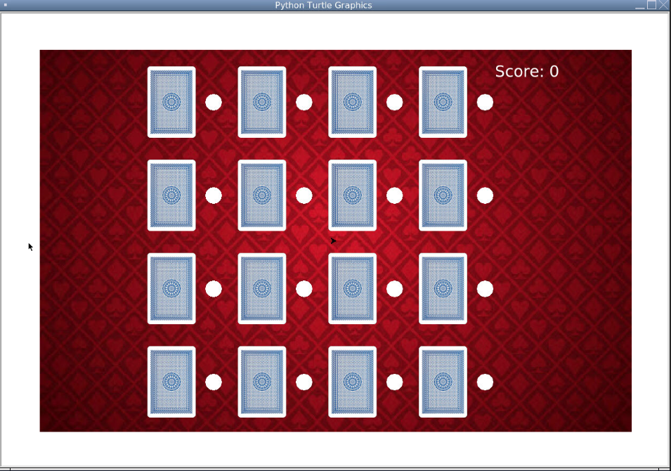
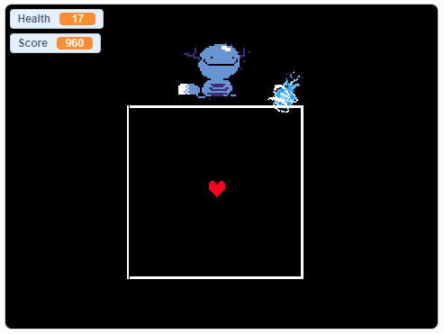
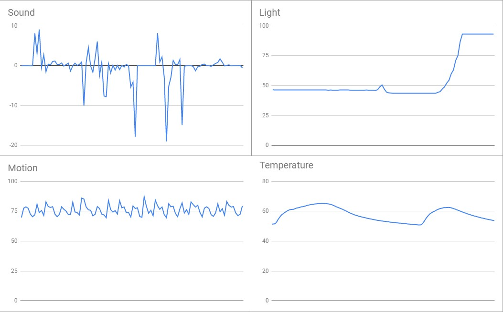
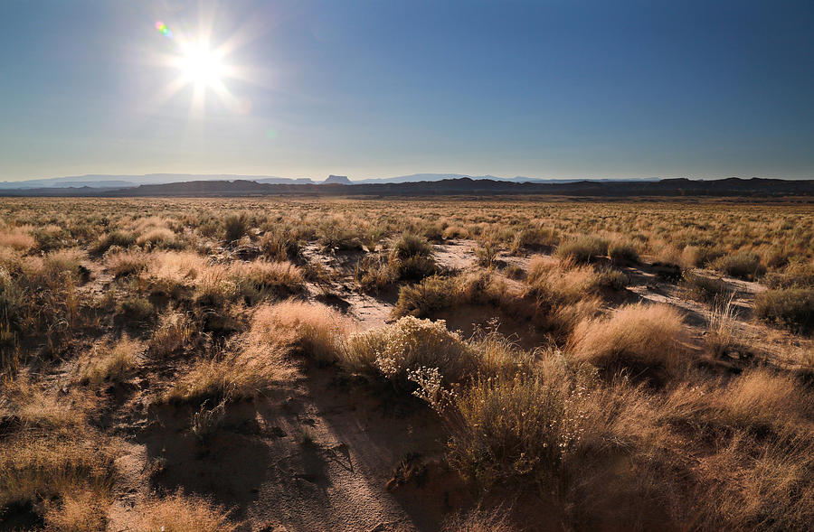

Home
Portfolio
About Me
This is my Portfolio Page!

This game project is tic tac turtle. It begins from the start screen where we press enter in the console. Then, it prompts player 1 and 2 to choose colors for the turtles. Then, the game can begin. Player 1 inputs 2 coordinates as seen in the picture. Then player 2 does the same. Both players keep going until a winner is declared.

This game project is card match. It's a memory game where you have to flip cards and match them with the same card until you match them all. We did this by adding all the cards to a list. Then the user clicks a corresponding turtle. The program will check if the second turtle they click is equal and matches them.

This game project is a remix of undertale. You play as the heart and you move around dodging water projectiles. The game ends when you get hit by too many water projectiles.
 
For this projet, we had to find out what region a rover was collecting data from based on the data. First, we had to determine what each graph represented. The smooth and steady graph was temperature as temperature changes gradually. The constantly changing one that goes below 0 as sound is highly variable and decibels can be negative. The steady graph that goes up suddenly was light as light levels are also steady, but changes quickly depending on the time. That left the last one as movement. We concluded that the region was desert plains. It can be both a cool 70 and a warm 85 and heats up relatively quickly but cools slowly. It becomes immensely bright during the daytime, high variability in sound due to the animals, and constant winds with some variety.